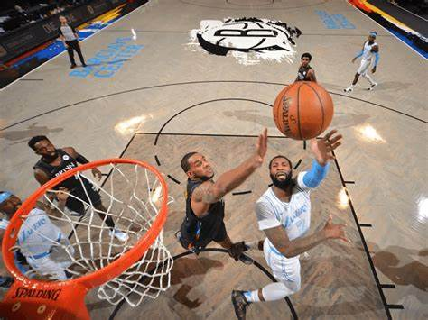

Basketball
Dikutip dari Bola.com . pada 9 november 2022
Bola Basket adalah olahraga bola berkelompok yang terdiri dari dua tim dengan masing-masing tim berisi lima orang. Kedua team tersebut saling bertanding untuk mencetak poin dengan memasukkan bola ke keranjang lawan sebanyak-banyaknya. Olahraga tersebut sangat populer di Amerika Serikat dan penduduk di belahan bumi lainnya, seperti Eropa Selatan, Lithuania, hingga Indonesia.
Sejarah Basketball
Basket merupakan permainan yang diciptakan seorang guru olahraga bernama James Naismith pada 1891-an. Kala itu, James ingin membuat permainan yang bisa dimainkan murid-muridnya dalam ruangan tertutup, terutama saat musim dingin. Namun, basket yang dilakukan James berbeda dari yang sekarang. James hanya membuat beberapa aturan dasar agar bisa diterima banyak orang. Beberapa aturan yang diterapkan James, antara lain setiap tim terdiri dari sembilan orang dan tidak adanya teknik dribble. Jadi, saat itu menggiring hanya dilakukan dengan cara melempar bola. Seiring berjalannya waktu, pemainan ini terus berkembang dan mulai dinamakan sebagai basketball. Permainan ini menyebar di Amerika dan terus berkembang pesat sampai sekarang. Untuk wilayah Asia, China menjadi satu di antara negara pertama yang mulai mengenal olahraga basket, selain Jepang dan Filipina. Pada 1920-an, orang-orang China merantau ke Indonesia dan secara tak langsung ikut memperkenalkan olahraga basket. Pada 1930-an, perkumpulan-perkumpulan basket mulai bermunculan di berbagai kota di Indonesia, mulai di Jakarta, Bandung, Yogyakarta, Surabaya, hingga Medan. Basket kemudian makin berkembang pesat setelah Indonesia merdeka pada 1945.
Ukuran Lapangan Basket
Ukuran Ring dan Tiang